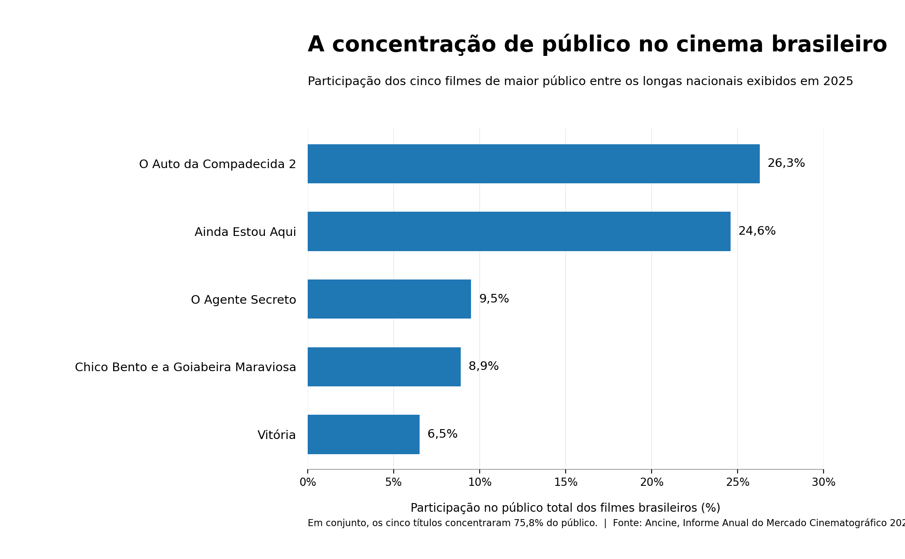
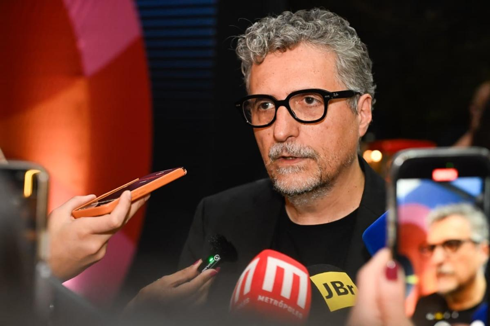

Em 2025, 367 longas-metragens brasileiros foram exibidos nas salas de cinema do país. Desses, 328, cerca de nove em cada dez, não chegaram a 10 mil espectadores. Apenas 12 ultrapassaram a marca de 100 mil ingressos vendidos.
Os números, do Informe Anual do Mercado Cinematográfico 2025, da Agência Nacional do Cinema (Ancine), medem público, não cobertura jornalística. Mas ajudam a formular uma pergunta que atravessa as redações: com centenas de filmes disputando atenção, quais chegam a ser vistos e discutidos, e o que é preciso para que um jornalista chegue até eles? Esta reportagem parte de dados públicos e das regras divulgadas por festivais para mapear essas condições.

Onde o público se concentra
A concentração fica mais evidente nas maiores bilheterias. Segundo o Informe, cinco produções responderam por mais de 75% do público total dos filmes brasileiros exibidos em 2025: O Auto da Compadecida 2 (26,3%), Ainda Estou Aqui (24,6%), O Agente Secreto (9,5%), Chico Bento e a Goiabeira Maraviosa (8,9%) e Vitória (6,5%). Somados, os percentuais chegam a 75,8%: três em cada quatro ingressos vendidos para filmes brasileiros foram para esses cinco títulos.

Esse desenho do mercado importa para o jornalismo porque filmes de grande bilheteria, premiações e repercussão internacional geram acontecimentos noticiáveis: recordes de público, indicações, prêmios, coletivas e reações no exterior. São pautas que interessam a muita gente e chegam quase prontas, o que tende a facilitar sua entrada na agenda dos veículos. Os dados da Ancine não permitem afirmar que a cobertura segue o mesmo padrão de concentração do público, porque isso exigiria medir o que cada veículo publica. O que eles indicam é que a lógica da notícia favorece quem já está em evidência.
Questionar o espaço dedicado a Ainda Estou Aqui ou a O Agente Secreto seria ignorar a relevância dessas conquistas para o cinema brasileiro. A pergunta é outra: o que acontece com os 328 títulos que ficaram abaixo de 10 mil espectadores, e com quem tenta apresentá-los ao público?

O custo de chegar aos filmes
Cobrir um filme a fundo começa pelo acesso a ele, aos realizadores e aos espaços em que as obras são exibidas e debatidas. Os festivais ocupam esse lugar: reúnem produções de diferentes origens e aproximam jornalistas de cineastas, atores e produtores. Esse acesso, porém, tem regras e custos.
No Festival de Brasília do Cinema Brasileiro, o credenciamento de imprensa da edição de 2026 passou por análise das solicitações, que deveriam ser enviadas pelos veículos interessados. A organização esclareceu que a credencial dava acesso às salas e aos espaços de atividades, mas não cobria transporte, hospedagem e alimentação. Na prática, acompanhar o festival presencialmente depende também da estrutura e dos recursos de quem cobre, o que pode pesar mais para jornalistas independentes e veículos menores.
As exigências variam de um evento para outro. Na EGBÉ – Mostra de Cinema Negro, a edição de 2026 informou que os pedidos de entrevista com realizadores e convidados deveriam ser articulados previamente com a equipe de comunicação, e que não haveria sala de imprensa: o atendimento aos credenciados ficaria concentrado nessa equipe. São procedimentos que organizam a relação entre imprensa e festival e que mostram quantas etapas separam a presença no evento da publicação de uma cobertura.
Release: ponto de partida ou ponto final?
Há ainda a questão do tempo. Com tantos lançamentos e eventos disputando a agenda cultural, acompanhar cada produção de perto nem sempre é possível. Releases, fotografias, trailers e sugestões de entrevista enviados por assessorias de imprensa tornam-se, nesse cenário, ferramentas úteis para a rotina das redações. O risco aparece quando o material de divulgação deixa de ser ponto de partida e passa a ser a própria cobertura: o texto reproduz o que já está disponível, e a apuração própria, que inclui ver o filme, ouvir os realizadores e checar informações, fica de fora.
A dependência do release também tem um recorte de desigualdade, apontado por quem trabalha na área. No prefácio de Jornalismo cultural no século 21 (Summus, 2015), livro de Franthiesco Ballerini, a jornalista Daysi Bregantini, diretora da revista Cult, escreve que os grandes veículos tendem a concentrar a cobertura cultural no eixo São Paulo–Rio de Janeiro e que, quando olham para a produção de outros estados, costumam ser guiados pelo release. A consequência, segundo ela, é que só chega à mídia nacional quem pode pagar uma assessoria de imprensa. Bregantini lembra ainda que o enxugamento das redações deixou as editorias de cultura nas mãos de poucos profissionais. Num cenário assim, o material pronto tende a ganhar peso.

O que ainda precisa ser medido
Os dados mostram um mercado em que poucos filmes reúnem a maior parte do público. As regras dos festivais e a rotina das redações indicam que chegar aos demais exige acesso, tempo e espaço. Falta, para fechar o quadro, o que só um levantamento do que de fato é publicado pode oferecer: quais filmes aparecem nos cadernos de cultura, em que proporção e com que profundidade. Sem essa medição, a ideia de que a atenção da imprensa acompanha a do público segue como hipótese. A pergunta que abre este texto, no entanto, continua de pé: diante de centenas de filmes por ano, quantos terão alguém disposto, e em condições, de contar sobre eles?